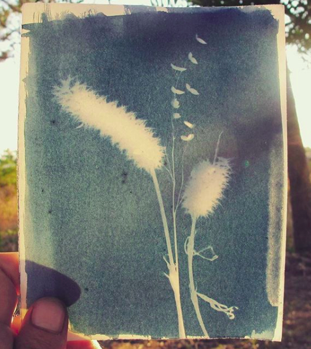
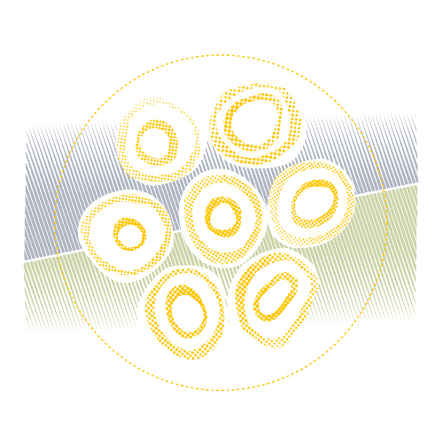

Stelar, 2018
Aktiv Protesk
Tempo, 2018
Aktiv Protesk
Basura Volume 2, 2018
Mattia Cuttini
Je rêve dans les coeurs, 2018
Max Osiris
CryptoKaiju, 2018
Coinjournal
Fourteen-segment Love, 2018
Mattia Cuttini
Seed Phrase Words Visualization RGBCVS White Edition, 2018
Martin Lukas Ostachowsky
Emoji Love, 2018
Hackatao collective
Game of Christ, 2018
Massimo Franceschet
Cicadada, 2018
G055AM3R-KO-01, 2018
Art for Machine
The Great Wave of Kanagawa, 2018
0xBull
Triangles, 2018
Niq
TCBA
Decentraland (20.52)
 blockchain art and AR
blockchain art and AR
foundations of matter series @ Superrare.co
 suburi
suburi
drypoint
 blockchain art
blockchain art
nr 418 @knownorigin.io
 clay module
clay module
archipelago series
 cover for nevoazul magazine #2
cover for nevoazul magazine #2
 aleister crowley
aleister crowley
cyanotype
 fern
fern
cyanotype photogram on lens
 ovum philosophicum
ovum philosophicum
linocut
 asa cards
asa cards
generative design
 seven principles
seven principles
dry point etch
photogram
cyanotype
 sun on dolmen (seal)
sun on dolmen (seal)
linocut
 blockchain art
blockchain art
#3 lemons and a xerox @superrare.co
 blockchain art
blockchain art
Foundations of Matter I
 CAOS
CAOS
selfpublished translation
blockchain art
cells - NIFTY HK
 still life with apples, passion fruit and lens
still life with apples, passion fruit and lens
silver print
 insula atlantis
insula atlantis
woodcut + linocut
 niche with egg
niche with egg
augmented reality
 tabula smaragdina
tabula smaragdina
selfpublished translation
 circles (materia prima tote bags)
circles (materia prima tote bags)
ink on paper + cyanotype
 silo auto, porto
silo auto, porto
cyanotype
 yukio mishima
yukio mishima
silkscreen
 blockchain art
blockchain art
pebbles - NIFTY HK
otk
some © some cc
say hi: oficinastk@gmail.com